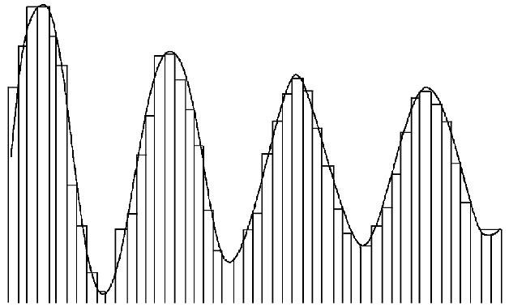
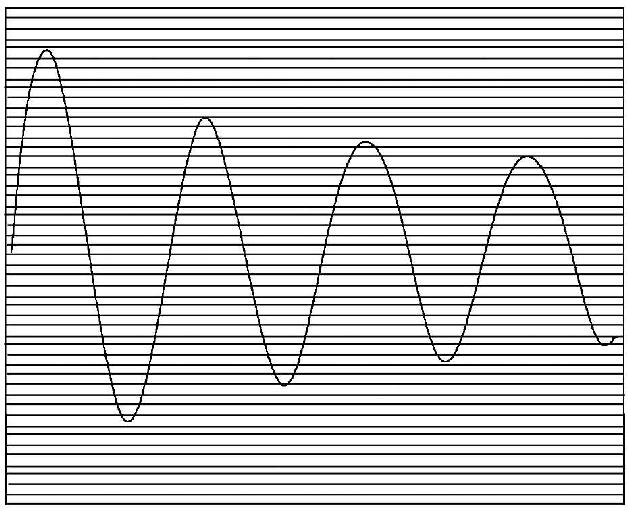
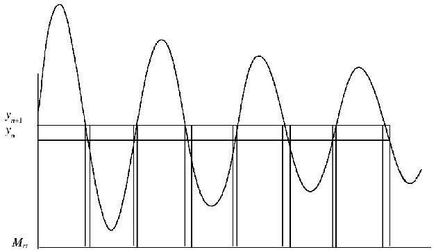
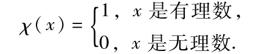

我曾经听过这样一个故事．有一个研究巴比伦天文学的历史学家，他的同事拿了一份古老的天文学手稿请他帮助解释，他捋了捋自己的胡子，然后就盯着面前这份手稿上古怪的符号沉思起来．突然，他开始给同事解释起来，那种转变之大就像从肖像模式旋转90°到了风景模式一样．亨利·勒贝格（Henri Lebesgue）对积分理论所做的正是这样一种改变．
1875年6月28日，勒贝格出生于巴黎北边50千米外小镇博韦斯的一个中产阶级家庭．勒贝格在一个提倡智力追求的家庭中长大，尽管他的父亲是排字工人而母亲是小学教师，但他们还是拥有一个藏书丰富的书房可以让勒贝格广泛阅读．在他的父亲因为肺结核死后不久，当地的学校认识到了他的才华，决定由当地的慈善团体支持他继续学习．
勒贝格有着出色的学习记录，首先在当地的博韦斯学院，接下来在巴黎的圣路易斯公学（Lycee saint Louis），然后在大路易斯公学（Lycee Louis-le-Grand）学习，1894年，勒贝格19岁，进入著名的巴黎高等师范学院．在高师，勒贝格让自己沉迷于数学学习，忽视了那些他不太感兴趣的学科．他的日记显示在通过一次化学考试时，他只是用平静的语调来回答有点耳聋的考官而没有在黑板上写任何东西．
1897年，勒贝格毕业于巴黎高师．两年后，为了测度和积分的新理论，他又回到了高师图书馆进行工作，而此时，他已经在索邦继续研究生学习了．勒贝格在靠近德国边境的南希的中央公学（Lycee Central）寻求到了一个教师的职位．在南希，勒贝格完善了他的思想，完成了那篇1902年获得索邦博士学位的论文．这篇文章很快在米兰的《数学年刊》（Annali di Matematica）上发表，并产生了深刻的影响．
在勒贝格之前，数学家们认为黎曼全面地发展了积分理论．在前面的章节，我们已看到柯西和黎曼建立了积分理论的基础，即对x轴进行分割，在每个分割的区域上取f（x）的值．

勒贝格惊人的洞察力在于将y轴进行分割，而不是x轴，不过大体上类似于柯西和黎曼对x轴进行的分割．
为了对y轴进行分割，勒贝格考虑每一个分割区域，并且寻求分割区域中被积函数所对应的x的值在x轴上所形成的部分的测度．
来看一个例子．考虑y轴上的一个分割区间（yn，yn+1）．


在这个例子中，在x轴上使函数取值在（yn，yn+1）之间的点形成集合Mn.为了确定区间（yn，yn+1）对勒贝格积分的作用，勒贝格将集合Mn的测度和区间（yn，yn+1）上的值相乘，采用魏尔斯特拉斯标准的ε-δ方法，勒贝格称，如果当y轴上的分割区间的宽度趋近于0时，这个式子的极限存在，那么该极限就是勒贝格积分的值．
为了用这种方式定义积分，勒贝格首先需要对测度理论进行探讨．如果从几何的角度来考虑这个问题，勒贝格将问题由决定一个二维物体的所占区域变为一个一维实直线上有关点集的测度．在勒贝格的论文中，最重要的部分就在于此．他首先作关于嵌入在一维实直线上的点集的测度的研究，而后发展了他的积分理论．
一开始，勒贝格阐述了测度需要满足的一些性质，这些性质必须与我们的直观相一致．
在定义一个集合的测度之前，勒贝格首先定义了它的外测度和内测度．如果一个集合具有外测度与内测度，且这两个测度的值相等，则称这个值就是该集合的测度．
一个集合的外测度按照以下方式定义．区间的覆盖形成一个大的集合，该集合可测（这个集合正是一些形成覆盖的区间之和的一个子集）．每一个形成覆盖的区间均有测度，而这些测度之和是有限的．由于有界集总可以用有界的区间来覆盖，因此勒贝格认为这些有界集的覆盖之和有一个有限的下确界，这个下确界就是外测度．
康托尔曾证明有理数是可数的，利用这个结果，勒贝格将n个有理数放入n个闭区间，每个闭区间的长度为εn.这样一来，所有这些区间的测度之和为ε这个要多小有多小的量．因此，勒贝格证明，有理数的外测度为0，即有理数构成了一个测度为0的可测集．
勒贝格这样定义一个区间［a，b］内的有界集E的内测度，即以有界集E在区间［a，b］（E［a，b］）内的余集部分的外测度来定义E的内测度．区间［a，b］内有界集E的内测度等于［a，b］的测度减去E在［a，b］内余集的外测度．用式子表示，即为：
measi（E）=b-a-mease（［a，b］-E），
这里，measi表示内测度，mease表示外测度．
由勒贝格的定义，显然［0，1］区间内无理数集合的内测度为1，这是因为［0，1］内有理数集的外测度为0.因此，一个明显的结果是［0，1］区间内无理数集的测度为1，有理数集的测度为0．
由这种不同的积分理论，一大类函数变得可积了，也开始成为数学分析的研究对象．最明显的一个勒贝格可积而黎曼不可积的例子为χ（x），即实数集中有理数的特征函数：

该函数是黎曼不可积的，因为对于x轴上的每个分割区域，不管如何分割，总会有无穷多的有理数和无理数，这样一来，其黎曼和不收敛．另一方面，决定勒贝格积分的那些元素只是取值为0和1的那些，显然，x轴上使χ（x）为1的那些点组成的集合，其测度为0，而在任何区间上，无理数的测度可以认为是区间的长度，因此，χ（x）的勒贝格积分为0．
在这些成果发表后，勒贝格的学术生涯很快发生了变化．1902到1903年，他在雷恩市的一所学校任教，但一年后，他就进入了巴黎的法兰西学院，直到3年后他接受了普瓦提埃大学（University of Poitiers）的一个职位才离开．1910年，巴黎大学任命他为讲师．当法国参加一战时，勒贝格在国防部工作，这使得他开始研究如何让军队更加安全地开赴前线这一问题．战后，巴黎大学给他提供了一个全职教授职位，但他在那儿只待了3年，因为法兰西学院让他做首席教授，在这个职位上，勒贝格度过了他的余生．
尽管勒贝格的思想对数学分析产生了革命性影响，但他本人在数学家圈子中只有很小的个人影响．勒贝格对学术以外的政治活动并不感兴趣，上上课，写写文章，过着隐士般的生活．尽管他有着杰出的成果，终其一生也只指导过一篇博士论文而已．但法国的数学家们还是意识到了勒贝格的重大贡献，1912年，他获得Houllevige奖，1914年获得Poncelet奖，1917年获得Santou奖，1919年获得Petit d′Ormoy奖，1922年他被选为法国科学院院士，达到了荣誉的顶峰．
勒贝格的生活一直很低调，因此关于其家庭生活，人们所知不多．1903年，在雷恩，勒贝格和他巴黎高师的一个同学的妹妹路易丝-玛格蕾特·法勒（Louis-Marguerite Valle）结婚．婚后，他们育有一子和一女，女儿名为苏姗娜（Suzanne），儿子叫雅各（Jacques）．1916年，在共同走过超过12年的婚姻后，夫妻俩离婚，此后勒贝格过着单身生活，并经常遭受疾病的袭击．1941年6月26日，在德国占领期间，勒贝格病逝于一场小病之后，享年66岁．